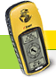

|  | |||
| MUUSEUM PILDID LOGID ARTIKLID LINGID | |||
| In English Foorum E-mail: geopeitus@geopeitus.ee | |||
Geopeituse luguEesti geopeitus sai alguse 10.02.2001 HE-aarde peitmisega. Vt. mängu kohta www.geopeitus.ee/wiki Mõte mäng ka Eestis käima panna tekkis pärast seda kui Eesti Päevalehes ilmus artikkel Kõrgtehnoloogiline peitusemäng GPS-i abil 2.01.2001 Siia muuseumilehele püüame tasapisi koguda huvitavaid fakte ja materjale selle kohta, kuidas geopeitus on Eestis arenenud. Ettepanekud on oodatud mailile geopeitus@geopeitus.ee PildidAardedAlates 2008. aastast on valitud aasta aaret. Seni on need olnud: 2008
Fantaseerija (geokrahv) LogidHe-aarde (peidetud 10.02.01) esimene logiraamat 1 2 Terevisiooni aarde (peidetud 23.05.03, arhveeritud 5.09.11) 1 2 3 Miniaarde 2. logiraamat (peidetud 29.04.01, arhiveeritud 18.09.11) ArtiklidArvutimaailmas Eesti geopeituse 1. aastapäeva puhul (2002) ilmunud lugu: Arvutimaailmas Eesti geopeituse 10. aastapäeva puhul (2011) ilmunud lood: Aaretejaht satelliitide ja sõpradega 1 2 3 4 Tehnoloogia ja vaba aja ühendus geopeituse näitel 1 2 LingidMiks ja kuidas keegi mängijatest geopeituriks hakkas ja mida sellest arvab Kuidas mängijad omale kasutajanimed said Päris esimene Eesti geopeituse veebi versioon nägi välja umbes selline Sügisel 2004 hakkas veebi arendama Andi firmast NEX Pealiku kõne Eesti geopeituse 10. kokkutulekul 13.02.2011 Speedy luuletus 10. aastapäeva kokkutulekul Lassie - Geopeitusest lahkutakse jalad ees Geojaanipäev 2011: Elu on lill! GeoTeataja ja geoviktoriin Geojaanipäev 2012: Kaart ja ööaarde teise punkti infotahvel
|
|